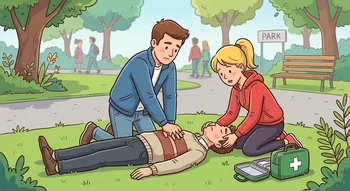

INFROGRAFIK
Skulle du noglesinde få brug for at udøvre HRL, kan du her læse step by step hvordan
Se mereVær med til at rede liv
Skulle du noglesinde få brug for at udøvre HRL, kan du her læse step by step hvordan
Se mereVil du være med til at gøre en forskel, så tilmeld dig her og bliv en del af hjerteløber teamet
Tilmeld her
Står du og mangler en førstehjælpskasse, kan du hos falck købe en genopfyldelig en
Køb her
Hjertestop er en af de mest alvorlige akutte tilstande, hvor hvert sekund tæller. Når hjertet stopper med at pumpe blod ....
Hjertestop er en af de mest alvorlige akutte tilstande, hvor hvert sekund tæller. Når hjertet
stopper
med at pumpe blod rundt i kroppen, mister hjernen hurtigt ilt, og uden hurtig hjælp kan det få fatale
konsekvenser.
Heldigvis kan hurtig indgriben fra omgivelserne – især hjertemassage – gøre en afgørende forskel for
overlevelsen.


Ambulancereddere er ofte de første på stedet, når en ulykke sker, eller ....
Ambulancereddere er ofte de første på stedet, når en ulykke sker, eller en person bliver alvorligt
syg.
De
spiller en afgørende rolle i at redde liv og skabe tryghed i akutte situationer.
I nogle tilfælde kan det ja. En sundere livstil, behanling af hjertesygdommeog reglmæssige lægetjekt, kan være med til at reducere risikoen.
Vær opmærksom på symtomerne, Find ud af hvor den nærsmeste hjertestarter er. og lær første hjælp og HRL, tag eventuel et kursus ved
Klik på linketDe typsike tegn er:
Dette sker ofte ud af det blå